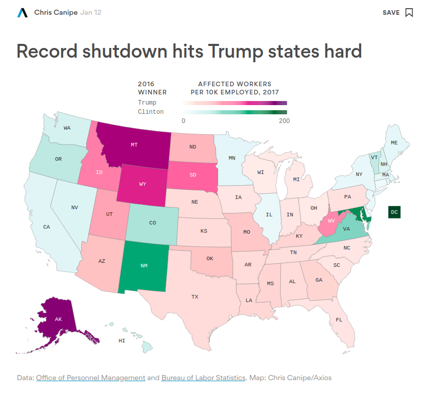
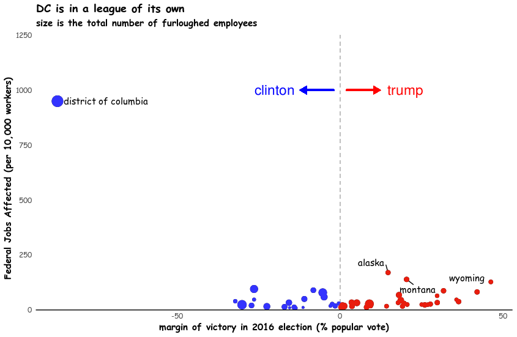

Data Viz: Government Shutdown and the 2016 Election
In January 2019, Axios produced a data visualization to demonstrate how the partial government shutdown was impacting different states and how that related to the outcomes of the 2016 presidential election. The visualization is a little confusing because there are two color scales, one for states that went for Trump and another for Clinton. Because the scales are distinguished by the 2016 winner, but the shade on each scale is determined by the number of federal workers affected by the government shutdown, the visualization is a little confusing.
To break it down into each of the map aesthetics, the x and y components are taken up by geographic data for each state’s location, while the color scale is the 2016 winner and the position on each scale is the number of federal employees affected. The interactive map was allowed the user to see the number of employees affected as a raw number and a proportion of all workers in each state, as well as the margin of victory in the 2016 election. It becomes hard to compare states in the two different color scales and those that are geographically distant because you have to use the interactive feature.
I decided to change the mapping aesthetics, instead of using geographic information, I used the margin of victory on the X axis, the Y axis is the number of workers affected by the shutdown, and the size of each dot is the percent of all workers in the state affected. I believe these changes still clearly highlight the states that are disproportionately affected, while also allowing better comparison. The major downside is that once you move away from the geographic map layout, the visualization becomes more difficult to immediately grasp the units (the state level) and you cannot label every state, so only the highlighted ones are identified. Additionally, there is substantial white space my visualization, which is not very appealing.

